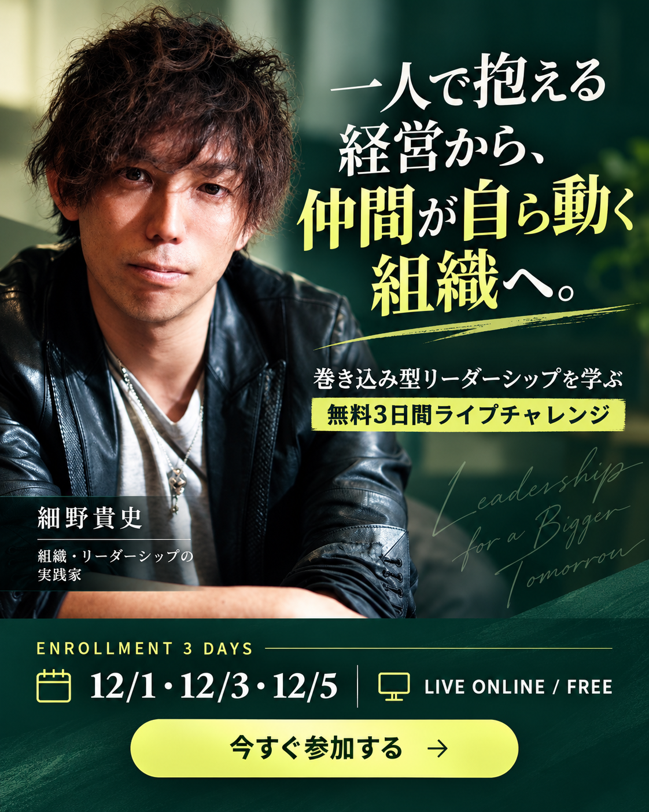

あなたは、仲間を
どんなふうに巻き込むタイプ？
6つの質問で、あなたらしい人の巻き込み方を整理します。

TAKASHI HOSONO / ENROLLMENT無料診断｜6問・約2分まずは、あなたらしい
まずは、あなたらしい
巻き込み方を知る。
どの選択肢も、その人らしい巻き込み方の表れです。迷った場合は、現在の自分に最も近い答えを選んでください。
※回答内容は外部へ送信されません。
質問 1 / 6
6つの質問で、あなたらしい人の巻き込み方を整理します。

TAKASHI HOSONO / ENROLLMENTどの選択肢も、その人らしい巻き込み方の表れです。迷った場合は、現在の自分に最も近い答えを選んでください。
※回答内容は外部へ送信されません。